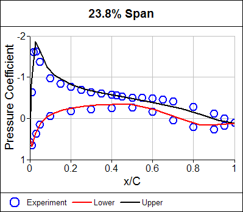
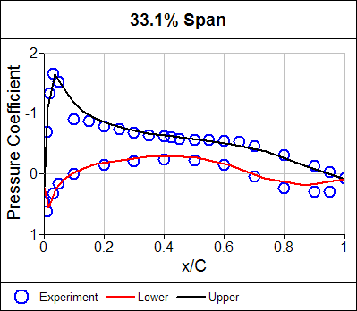
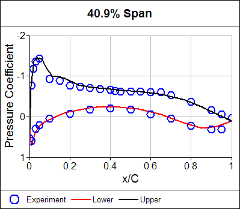
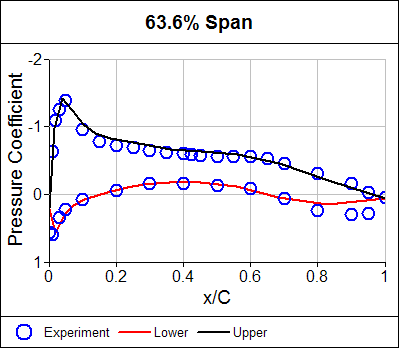
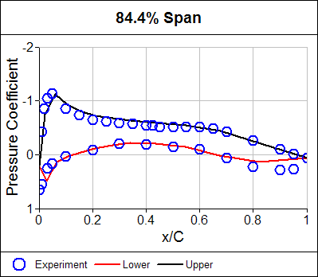

DLR F4 Wing-Body Calculation
The DLR F4 is an idealized wing-body model of a passenger jetliner, such as the Boeing 737, that was tested in multiple wind tunnels for comparison with Computational Fluid Dynamics (CFD) calculations.
 Boeing 737Image courtesy of Adrian Pingstone
Boeing 737Image courtesy of Adrian Pingstone
Background
The wind-tunnel experiments were performed at air speeds within the transonic flow regime, which encompasses both supersonic and subsonic airflow. While a panel method can’t model supersonic flow regions, it can model subsonic compressible flow (0.3 < Mach number < 1) when a compressible correction is used as in our Panel Flow add-on.
The experimental data contain a series of Mach numbers at constant lift, each with pressure-coefficient distributions for various span-wise locations on the wing. For those conditions without supersonic regions our Panel Flow add-on calculations should be able to match the experimental distributions with reasonable accuracy.
Method
We calculated results for Mach number = 0.6, which does not include supersonic flow regions. Thus, our Panel Flow add-on, with the Karman-Tsien compressible correction for the pressure-coefficient, should produce reasonably accurate results.
A sharp wing trailing edge is needed to shed wake elements, so the original blunt trailing edge was modified. Wakes were defined to originate at the modified sharp trailing edge, skipping a small region adjacent to the body to avoid the wake colliding with the body. An automated, pseudo time-stepping, force-free technique was used to convect wake elements downstream.
The angle of attack (alpha) for the calculation was chosen to best match the experimental pressure coefficient distributions with the calculated distributions, given that there was no specified alpha in the experiment.
The data used for comparisons are from the NLR wind-tunnel tests.
Results
Surface pressure coefficient contours and wake elements are shown below.

Pressure coefficient distributions at various span-wise locations on the wing are shown below. The experimental results are represented by open circles and the calculated results are represented by lines.





Good agreement between the calculation and the experiment is observed except in the trailing-edge region. This discrepancy is most likely due to un-modeled viscous effects.
Try For Yourself
The sym project file for this study can be viewed in Caedium or you can investigate this case yourself using our Panel Flow add-on.
The most convenient way to view and edit this case is to use our Professional add-on that combines all the add-ons used during this example.
Feedback
Questions? Ideas? Problems?